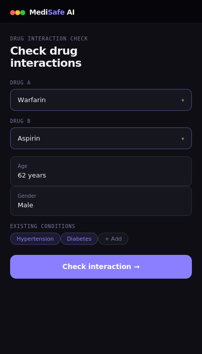
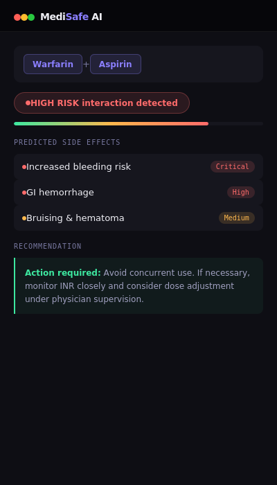
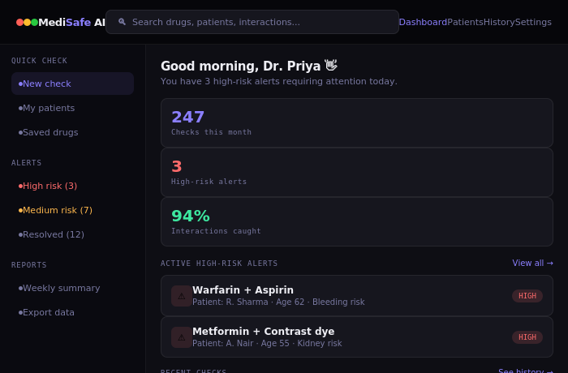

An AI-powered drug interaction and side effect predictor designed to help doctors and pharmacists make faster, safer prescription decisions and prevent the 60% of adverse drug events that are entirely avoidable.
Patients often take multiple medications simultaneously, dramatically increasing adverse interaction risk. Today's workflow is broken:
MediSafe AI gives healthcare professionals instant, personalised drug safety intelligence at the point of prescription:
"I see 40 patients a day. I can't memorise every interaction for every drug combination. I need something that fits into my workflow — not something that slows it down."
"Patients come in with prescriptions from multiple doctors. I'm the last line of defence before a dangerous combination reaches them — but my tools are fifteen years old."
"I take medicines from three different specialists. Nobody checks if they interact. I Google it myself but I don't understand the results and I don't know if I should be worried."
"Adverse drug events are our biggest liability. Each incident costs us in litigation, extended stays, and reputation. We need data on where risks are happening across the hospital."
| Product | Target user | Interaction check | AI side effect prediction | Patient personalisation | Pricing | Key gap |
|---|---|---|---|---|---|---|
| Drugs.com checker | General public | ✓ Basic | ✗ None | ✗ None | Free | No clinical depth or personalisation |
| Epocrates | Doctors | ✓ Good | ✗ None | ~ Limited | $17/mo | No AI prediction layer, expensive |
| Medscape checker | Clinicians | ✓ Good | ✗ None | ✗ None | Free | No personalisation or AI prediction |
| IBM Micromedex | Hospitals | ✓ Excellent | ~ Partial | ~ Some | Enterprise only | Inaccessible to individual doctors |
| UpToDate | Clinicians | ~ Indirect | ✗ None | ✗ None | $600+/yr | Not built for interaction checking |
| Epic EHR alerts | Hospital systems | ✓ Good | ✗ None | ✓ Yes | Hospital contract | Only works inside Epic ecosystem |
| MediSafe AI this product | Doctors, pharmacists, patients | ✓ Real-time AI | ✓ AI-powered | ✓ Age, conditions, history | Freemium + Pro | — fills the gap |
The input screen is designed for clinical speed. Drug names autocomplete from a database of 20,000+ compounds. Patient context fields are optional but improve prediction accuracy significantly.

The output screen leads with the risk level badge. Predicted side effects are listed by severity. Every output ends with a specific recommendation the doctor can act on immediately.

The doctor dashboard surfaces active high-risk alerts, recent check history, and monthly statistics. Designed to make proactive drug safety monitoring possible without adding workflow burden.

| Risk | Impact | Severity | Mitigation |
|---|---|---|---|
| Model predicts an incorrect safe interaction | Patient harm — the highest stakes failure mode | Critical | Position as decision support, never autonomous. Require doctor confirmation for all High-risk flags. Clear disclaimer on all outputs. Validate against gold-standard clinical databases before any launch. |
| Regulatory classification as medical device | FDA / CE mark requirements could delay launch 1–2 years | High | Early consultation with regulatory experts. Initial positioning as a "clinical reference tool" (lower burden) rather than diagnostic software. Legal review before MVP launch. |
| Low adoption due to workflow friction | Product fails to gain traction despite good technology | Medium | Co-design MVP with 5–10 doctors through user interviews and prototype testing before build. Freemium model removes cost barrier. Hospital pilot programme drives institutional adoption. |
| Drug database becomes outdated | Inaccurate interaction data — missed or false alerts | Medium | Automated weekly sync with FDA FAERS and DrugBank. Internal data quality monitoring with alerts when source databases update. Manual clinical review for flagged edge cases. |
| Patient data privacy and HIPAA compliance | Data breach — legal liability and complete trust destruction | Medium | MVP does not store any patient identifiable data. All processing is session-based and ephemeral. Full HIPAA compliance architecture designed before Phase 2 patient personalisation launches. |
I'm Yana Ajjamada, an M.Sc. Organic Chemistry graduate from St Joseph's University, Bengaluru. My research focused on AI-based pharmaceutical stability prediction — which showed me how computational tools can fundamentally change how the pharmaceutical industry operates.
MediSafe AI is a product concept I designed to demonstrate my transition into product management. My science background gives me a rare advantage in healthcare product thinking — I understand the domain deeply, not just the interface on top of it.
This case study shows my ability to identify a real market gap, frame it as a product problem, understand diverse users, analyse competitors, design a prioritised roadmap, and define measurable success metrics — the core skills of product management.